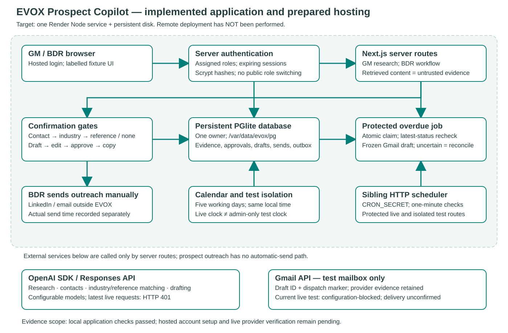
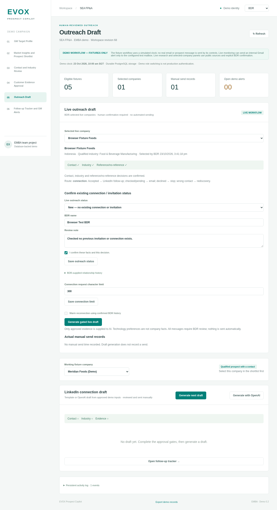

GM criteria → sourced shortlist → contact and industry confirmation → approved reference or no reference → reviewed draft → manual send → status monitoring.

Mandatory eligibility is separate from preferences. Fit is separate from evidence confidence. Source material never authorizes workflow actions.

Actual Chromium capture of the application using explicit synthetic evaluation data. Render hosting is prepared, not deployed.Source passages, approved claims, draft versions, final character count and actual manual-send time remain distinct.
“Our customers saved fifty percent with EVOX.”
No approved customer evidence. Digits were checked; written numbers bypassed the validator.Written-number metrics and added customer outcomes are checked beyond the exact approved claim.
Before/after inputs, actual results and regression tests are retained. Human factual review is still required.| Live AI | 2 real requests → HTTP 401 |
|---|---|
| Gmail | Missing configuration; no sent email |
| Render | Prepared; no remote deployment |
No prospect accuracy, delivered-email, time-saving or conversion claim is made. Ten curated fixture passes do not establish live research quality.
Sources: evaluation JSON, qualitative customer-story review and actual UI screenshots. Run date: 23 October 2026.